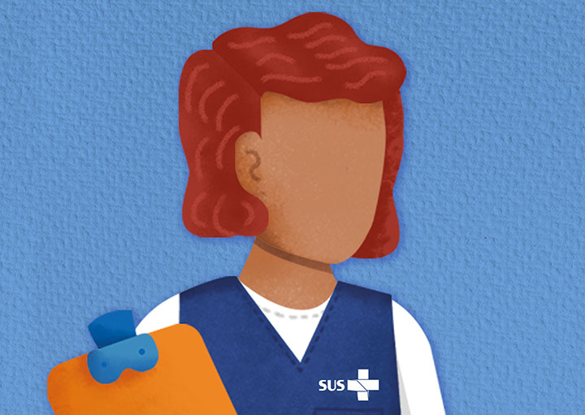
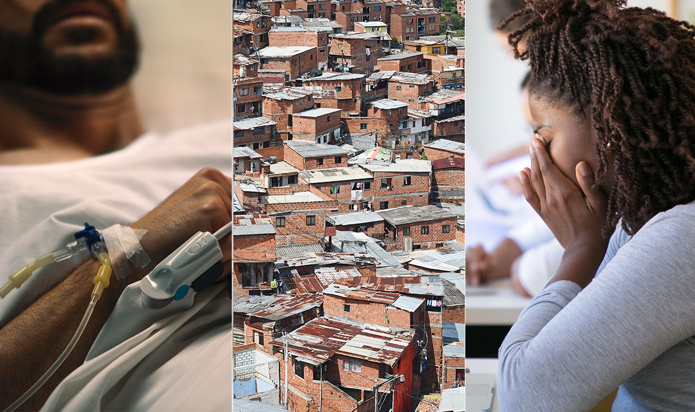

Módulo 1 | Aula 2 Reflexões sobre a salutogênese no contexto da Atenção Primária à Saúde
Paradigma salutogênico de saúde

A Política Nacional de Atenção Básica (2017) tem o compromisso de promover a saúde, a prevenção, o tratamento de doenças, a redução de danos ou de sofrimentos que comprometam o modo de vida do indivíduo ou da coletividade em seus territórios.
Você sabia que existe um paradigma ou modelo científico que pode auxiliar os trabalhadores da APS a implantar ou implementar a Política Nacional de Atenção Básica (2017) tendo como foco a saúde?
Estamos nos referindo ao modelo salutogênico de Saúde, descrito pelo cientista e pesquisador Aaron Antonovsky, que estudou a relação entre a saúde e a doença, criando a palavra: “salutogênese, das origens (gênese) da saúde (saluto)” (ANTONOVSKY, 1979). Este termo surge de um questionamento intrigante: quais são as origens da Saúde?
O autor rejeita a classificação dicotômica “saúde-doença”. Sua proposta é ultrapassar essa divisão criando um conceito de um processo contínuo no qual ao longo da vida as pessoas irão se defrontar com os dois pólos desse contínuo, ou seja, o polo ease (saúde) e disease (doença).
No prefácio do seu primeiro livro aponta-se que não há soluções fáceis para se pensar a saúde a partir do modelo salutogênico. Seus escritos são dirigidos a sociólogos, psicólogos, enfermeiros, médicos, organizadores de saúde, epidemiologistas, arquitetos, organizadores comunitários, àqueles que desejam compreender e aprimorar as capacidades adaptativas dos seres humanos (ANTONOVSKY, 1979).
A partir desta indagação, Antonovsky desenvolve estudos e pesquisas para analisar as perspectivas de Promoção da Saúde a partir da superação da dicotomia entre saúde e doença. Com isso, o autor explicita a distinção entre os fatores e elementos que podem contribuir para cada pessoa promover saúde, daqueles que podem reduzir ou modificar os riscos para doenças e agravos específicos.
Ao longo de sua pesquisa sobre as origens da saúde, aprofundou os estudos acerca das relações entre estressores, saúde e doença de modo a compreender por que algumas pessoas conseguiam manter boa saúde física e mental mesmo em condição de forte estresse.
Nesse contexto, o foco central da salutogênese é o estudo dos recursos de enfrentamento, ou seja, mesmo diante de fatores estressantes algumas pessoas desenvolvem a capacidade de superação e conseguem focar na promoção de sua saúde.
A partir de agora, iremos discutir alguns conceitos baseados na obra deste autor.
O estresse deve ser compreendido como algo endêmico (nativo ou constituinte) à condição humana. O estresse é reconhecido como aqueles fatores que levam ao estado de tensão. Eles podem ser provenientes do próprio indivíduo (interno) ou do ambiente externo, sendo imposto ao sujeito.
A tensão é uma resposta ao estresse e pode ser tanto emocional como fisiológica. Então, controlar, manejar ou fazer gestão do estresse é a resolução rápida e completa do problema e da eliminação da tensão que está em seu organismo. Porque a tensão, se não for resolvida de modo eficaz, leva o indivíduo a entrar em um estado de estresse como o estado de resposta do organismo frente às tensões que podem levar às doenças crônicas.
Nessa perspectiva, torna-se importante, não só estudar os estressores, mas também, olhar e compreender como os indivíduos, especialmente aqueles em situação de vulnerabilidade social e que têm menos recursos, combatem esses estressores.
O paradigma salutogênico, para estabelecer-se como um construto universal de saúde, afastou-se da orientação do paradigma patogênico, estabelecendo-se como uma orientação global sobre a saúde.
O desprovimento de recursos e a saúde estão intimamente ligados, trazendo a visão de que a saúde não se deve apenas à menor ou maior qualidade dos serviços de saúde, mas também aos impactos dos determinantes sociais em saúde na vida da população.

Você encontrará aqui um artigo sobre determinantes sociais.
Para o modelo salutogênico, os determinantes sociais em saúde, como por exemplo a pobreza, o desemprego e a violência, podem contribuir para uma situação de tensão crônica da vida. As situações estruturais e culturais duradouras como pobreza, desemprego e marginalidade podem gerar aborrecimentos diários, que as pessoas enfrentam e que podem levar, por exemplo, às doenças crônicas não transmissíveis.
Contudo, a exposição a tais estressores cria uma tensão imediata ao organismo, que se resolvida, não resulta em uma doença ou estresse como uma condição prejudicial à saúde. De tal maneira, para Antonovsky, o enfrentamento e o manejo/gestão da tensão emergiram como conceitos importantes e impulsionadores para fomentar ações com enfoque na promoção da saúde.
Será que há diferença se duas pessoas estiverem expostas ao mesmo estressor e uma delas tiver muitos recursos de enfrentamento, enquanto a outra praticamente não tiver nenhum? Tanto a experiência de vida cultural quanto suas consequências serão diferentes para as duas pessoas no manejo/gestão do estresse?
A pergunta que se impõe é a da compreensão que sustenta a sobrevivência do ser humano, bem como saber onde encontrar a força e a capacidade de sobrevivência. De acordo com a teoria salutogênica, a resolução efetiva da tensão está relacionada a dois aspectos principais: o senso de coerência e os recursos gerais ou generalizados de resistência, que serão abordados a seguir.